ΟΔΗΓΟΣ ΧΡΗΣΗΣUSER GUIDE
Όλο το RoboTrails, βήμα βήμαAll of RoboTrails, step by step
Ο οδηγός είναι γραμμένος για εκπαιδευτικούς. Ξεκινά από την προετοιμασία του micro:bit, εξηγεί κάθε κουμπί και κάθε μπλοκ, και τελειώνει με τα διαδραστικά τετράγωνα, την αρπάγη και ιδέες για την τάξη. Τα παιδιά δεν χρειάζεται να διαβάσουν τίποτα: η εφαρμογή τους μιλά με εικόνες.
This guide is written for teachers. It starts with preparing the micro:bit, explains every button and every block, and ends with interactive squares, the grabber and classroom ideas. Children do not need to read anything: the app talks to them in pictures.
1. Τι χρειάζεστε1. What you need
| ΤιWhat | ΛεπτομέρειεςDetails |
|---|---|
| ΣυσκευήDevice | Tablet Android, Chromebook ή υπολογιστής (Windows, macOS, Linux) με Chrome ή Edge. Στο iPad και στο Safari η εφαρμογή ανοίγει και η προσομοίωση δουλεύει, αλλά δεν γίνεται σύνδεση Bluetooth.An Android tablet, a Chromebook or a computer (Windows, macOS, Linux) with Chrome or Edge. On an iPad and in Safari the app opens and the simulation works, but Bluetooth connection is not possible. |
| micro:bit | Ένα micro:bit V2 (έχει ηχείο και αρκετή μνήμη για το Bluetooth).A micro:bit V2 (it has a speaker and enough memory for Bluetooth). |
| ΡομπότRobot | TPBot Edu (κινείται με ακρίβεια σε εκατοστά και μοίρες) ή TPBot (κινείται για ορισμένο χρόνο). Το ρομπότ είναι προαιρετικό: όλα δουλεύουν και στην οθόνη.TPBot Edu (moves exactly, in centimetres and degrees) or TPBot (moves for a set time). The robot is optional: everything also works on screen. |
| Πίστα δαπέδουFloor track | Προαιρετικά, ένα πλέγμα με τετράγωνα 20 cm, τυπωμένο ή φτιαγμένο με ταινία. Η εφαρμογή τυπώνει πρότυπο και πίστες (κεφάλαιο 9).Optional: a grid of 20 cm squares, printed or made with tape. The app prints a template and tracks (chapter 9). |
| ΠρόσθεταAdd-ons | Προαιρετικά, μια αρπάγη με σερβοκινητήρα 0–360° σε μία από τις υποδοχές S1–S4 (κεφάλαιο 14).Optional: a grabber with a 0–360° servo in one of the S1–S4 sockets (chapter 14). |
Δεν υπάρχει εγγραφή και δεν στέλνεται τίποτα πουθενά. Το πρόγραμμα, οι ρυθμίσεις και η πίστα μένουν μόνο στη συσκευή, στον browser που τα φτιάξατε.
There is no sign-up and nothing is sent anywhere. The program, the settings and the track stay on the device only, in the browser where you made them.
2. Προετοιμασία του micro:bit (μία φορά)2. Preparing the micro:bit (once)
Το micro:bit χρειάζεται ένα μικρό πρόγραμμα, τον «εκτελεστή». Αυτός δείχνει τις εικόνες, παίζει τους ήχους, οδηγεί το ρομπότ και την αρπάγη, και στέλνει πίσω τα κουμπιά και τους αισθητήρες. Όλη η σκέψη γίνεται στην εφαρμογή, γι' αυτό τα παιδιά δεν κατεβάζουν ποτέ προγράμματα.
The micro:bit needs one small program, the "runner". It shows the pictures, plays the sounds, drives the robot and the grabber, and sends the buttons and sensors back. All the thinking happens in the app, so children never download programs.
- Ανοίξτε το makecode.microbit.org και φτιάξτε νέο έργο.Open makecode.microbit.org and start a new project.
- Επιλέξτε JavaScript από τον διακόπτη στην κορυφή και επικολλήστε όλο τον κώδικα του main.ts.Switch to JavaScript at the top and paste all of main.ts.
- Στις Επεκτάσεις (Extensions) προσθέστε το bluetooth, και μετά επικολλήστε
https://github.com/elecfreaks/pxt-TPBotκαι προσθέστε το. Αν το MakeCode προτείνει να αφαιρέσει το radio, δεχτείτε.In Extensions add bluetooth, then pastehttps://github.com/elecfreaks/pxt-TPBotand add it. If MakeCode offers to remove radio, accept. - Γρανάζι → Project Settings → ενεργοποιήστε το No Pairing Required.Gear → Project Settings → turn on No Pairing Required.
- Πατήστε Λήψη (Download) και αντιγράψτε το αρχείο
.hexστον δίσκο MICROBIT.Press Download and copy the.hexfile onto the MICROBIT drive.
Φτιάξτε το .hex μία φορά και μοιραστείτε το με όλους τους συναδέλφους: αρκεί να το αντιγράψουν στο micro:bit. Ξαναφτιάξτε το μόνο όταν βγει νέα έκδοση του main.ts (για παράδειγμα, η αρπάγη χρειάζεται την έκδοση με την εντολή Z).
Make the .hex once and share it with every colleague: they only copy it onto the micro:bit. Make it again only when a new main.ts comes out (for example, the grabber needs the version with the Z command).
Τεχνικές λεπτομέρειες: οι εντολές του εκτελεστήTechnical details: the runner's commands
3. Η οθόνη της εφαρμογής3. The app screen
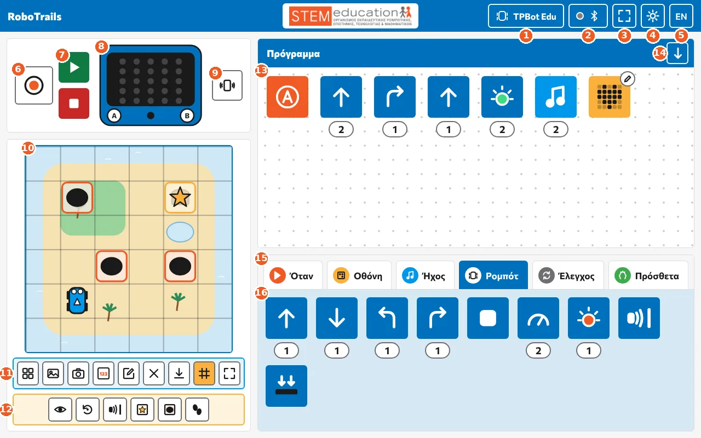
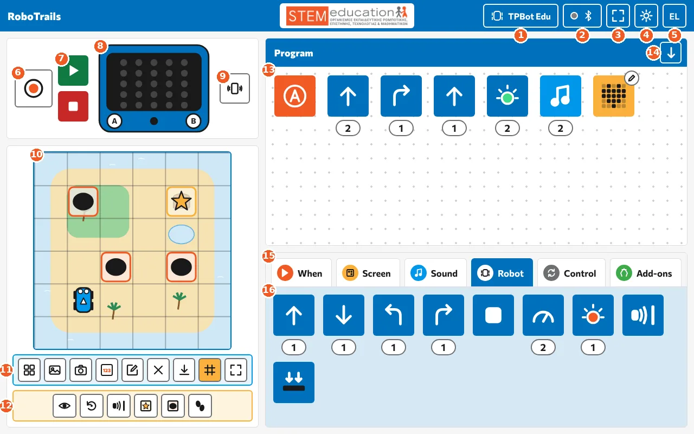
| 1 | ΡομπότRobot · διαλέξτε TPBot Edu ή TPBot. Αλλάζουν οι κινήσεις και οι ρυθμίσεις.choose TPBot Edu or TPBot. The moves and the settings change. |
| 2 | ΣύνδεσηConnect · Bluetooth με το micro:bit. Η τελεία γίνεται πράσινη όταν συνδεθεί.Bluetooth to the micro:bit. The dot turns green when connected. |
| 3 | Πλήρης οθόνηFull screen · όλη η εφαρμογή σε πλήρη οθόνη, χωρίς τις μπάρες του browser.the whole app in full screen, without the browser bars. |
| 4 | ΡυθμίσειςSettings · απόσταση και ταχύτητα του ρομπότ, μέγεθος πλέγματος, αρπάγη (κεφάλαιο 15).robot distance and speed, grid size, grabber (chapter 15). |
| 5 | ΓλώσσαLanguage · Ελληνικά ή Αγγλικά. Αλλάζει τις λίγες λέξεις της εφαρμογής και τις οδηγίες στους πίνακες.Greek or English. It changes the few words in the app and the instructions on the boards. |
| 6 | Καταγραφή βημάτωνRecord mode · το πιο απλό είδος προγραμματισμού, όπως στα επιδαπέδια ρομπότ (κεφάλαιο 8).the simplest kind of programming, like floor robots (chapter 8). |
| 7 | Εκκίνηση και στοπPlay and stop · τρέχει το πρόγραμμα ή το σταματά, στην οθόνη και στο ρομπότ.runs the program or stops it, on screen and on the robot. |
| 8 | Εικονικό micro:bitVirtual micro:bit · δείχνει την οθόνη LED. Τα κουμπιά A και B πατιούνται, όπως στο πραγματικό.shows the LED screen. Buttons A and B can be pressed, like the real ones. |
| 9 | ΚούνημαShake · «κουνάει» το εικονικό micro:bit, για το μπλοκ «όταν κουνηθεί»."shakes" the virtual micro:bit, for the "when shaken" block. |
| 10 | ΣκηνήStage · η πίστα με το εικονικό ρομπότ. Πατήστε ένα τετράγωνο για να ξεκινά από εκεί, πατήστε το ρομπότ για να το στρίψετε.the track with the virtual robot. Tap a square to start there, tap the robot to turn it. |
| 11 | Εργαλεία πίσταςTrack tools · βιβλιοθήκη, φόντο, φωτογραφία, τετράγωνα αριθμών, αλλαγή τετραγώνου, αφαίρεση φόντου, πρότυπο, πλέγμα, πλήρης οθόνη σκηνής (κεφάλαιο 9).library, backdrop, photo, numbers squares, modify square, remove backdrop, template, grid, full-screen stage (chapter 9). |
| 12 | Εργαλεία εκπαιδευτικούTeacher tools · προεπισκόπηση διαδρομής, επιστροφή στην αρχή, αισθητήρες, στόχος, παγίδα, μετρητής βημάτων (κεφάλαιο 7).route preview, back to start, sensors, target, trap, step counter (chapter 7). |
| 13 | ΠρόγραμμαProgram · εδώ μπαίνουν τα μπλοκ, από αριστερά προς τα δεξιά.the blocks go here, from left to right. |
| 14 | ΔιάταξηLayout · το πρόγραμμα οριζόντια ή κάθετα.the program across or down. |
| 15 | ΚατηγορίεςCategories · Όταν, Οθόνη, Ήχος, Ρομπότ, Έλεγχος, Πρόσθετα. Σε στενή οθόνη φαίνεται μόνο το εικονίδιο.When, Screen, Sound, Robot, Control, Add-ons. On a narrow screen only the icon shows. |
| 16 | ΜπλοκBlocks · τα μπλοκ της κατηγορίας που διαλέξατε.the blocks of the chosen category. |
Με ποντίκι, αφήστε τον δείκτη πάνω σε οποιοδήποτε κουμπί ή μπλοκ: εμφανίζεται μια σύντομη εξήγηση. Στα tablet οι εξηγήσεις δεν φαίνονται, ώστε η οθόνη των παιδιών να μένει χωρίς λέξεις.
With a mouse, rest the pointer on any button or block: a short explanation appears. On tablets the explanations do not show, so the children's screen stays free of words.
4. Σύνδεση του ρομπότ4. Connecting the robot
- Βάλτε το micro:bit (με τον εκτελεστή) στο ρομπότ και ανοίξτε το ρομπότ.Put the micro:bit (with the runner) in the robot and switch the robot on.
- Στην εφαρμογή, διαλέξτε το σωστό ρομπότ (κουμπί 1).In the app, choose the right robot (button 1).
- Πατήστε το κουμπί Bluetooth (κουμπί 2). Ο browser δείχνει μια λίστα: διαλέξτε το micro:bit σας (το όνομά του είναι κάτι σαν
BBC micro:bit [zavit]).Press the Bluetooth button (button 2). The browser shows a list: choose your micro:bit (its name looks likeBBC micro:bit [zavit]). - Στην οθόνη του micro:bit εμφανίζεται ένα τικ και η τελεία στο κουμπί γίνεται πράσινη. Από εδώ και πέρα, ό,τι κάνει η οθόνη το κάνει και το ρομπότ.A tick appears on the micro:bit screen and the dot on the button turns green. From now on, whatever the screen does, the robot does too.
Κάθε micro:bit έχει δικό του πενταγράμματο όνομα. Γράψτε το με ένα αυτοκόλλητο πάνω στο ρομπότ, ώστε κάθε ομάδα να διαλέγει το δικό της από τη λίστα.
Each micro:bit has its own five-letter name. Write it on a sticker on the robot, so each group picks their own from the list.
5. Φτιάχνοντας πρόγραμμα5. Building a program
- Προσθήκη: πατήστε ένα μπλοκ και μπαίνει στο τέλος του προγράμματος, ή σύρετέ το στη θέση που θέλετε.
- Add: tap a block and it goes to the end of the program, or drag it to the place you want.
- Αριθμός: πατήστε τον αριθμό κάτω από ένα μπλοκ για να αλλάξει (για παράδειγμα 1, 2, 3 τετράγωνα). Το κενό οβάλ σημαίνει «συνέχισε μέχρι να το αλλάξει άλλο μπλοκ».
- Number: tap the number under a block to change it (for example 1, 2, 3 squares). The empty oval means "keep going until another block changes it".
- Μετακίνηση: σύρετε ένα μπλοκ του προγράμματος σε άλλη θέση. Διαγραφή: σύρετέ το έξω από το πρόγραμμα.
- Move: drag a program block to another place. Delete: drag it out of the program.
- Επανάληψη: τα μπλοκ «επανάλαβε» και «για πάντα» αγκαλιάζουν άλλα μπλοκ. Σύρετε μπλοκ μέσα στο πλαίσιό τους.
- Loops: the "repeat" and "forever" blocks wrap other blocks. Drag blocks into their frame.
- Εικόνα LED: πατήστε ένα μπλοκ εικόνας μέσα στο πρόγραμμα (έχει ένα μολυβάκι) για να ζωγραφίσετε τα 25 LED.
- LED picture: tap a picture block in the program (it has a small pencil) to draw on the 25 LEDs.
- Το πρόγραμμα χωρά έως 30 μπλοκ και αποθηκεύεται αυτόματα στη συσκευή.
- A program holds up to 30 blocks and is saved automatically on the device.
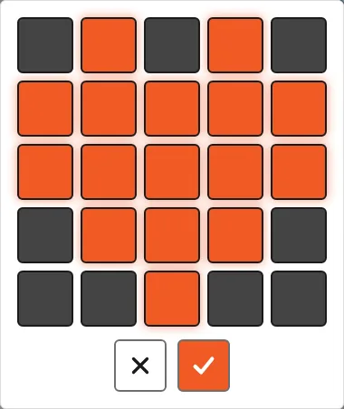
6. Τα μπλοκ6. The blocks
Όταν (πορτοκαλί)When (orange)
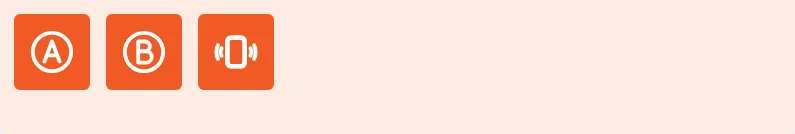
Το πρόγραμμα περιμένει: όταν πατηθεί το A, όταν πατηθεί το B, όταν κουνηθεί. Πατήστε το πράσινο κουμπί και το πρόγραμμα σταματά στο μπλοκ αυτό μέχρι να γίνει το γεγονός. Έτσι τα παιδιά ξεκινούν το ρομπότ από το ίδιο το micro:bit (ή από τα εικονικά κουμπιά A, B και το κούνημα).
The program waits: when A is pressed, when B is pressed, when shaken. Press the green button and the program stops at this block until the event happens. This way children start the robot from the micro:bit itself (or from the virtual A, B and shake buttons).
Οθόνη (κίτρινο)Screen (yellow)
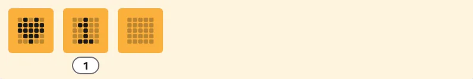
Εικόνα (τη ζωγραφίζετε), αριθμός 0–9, καθάρισμα της οθόνης.
Picture (you draw it), number 0–9, clear the screen.
Ήχος (γαλάζιο)Sound (light blue)
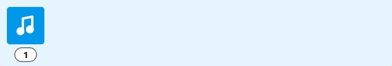
Δέκα ήχοι του micro:bit V2, με τον αριθμό: 1 γέλιο, 2 χαρά, 3 χαιρετισμός, 4 ελατήριο, 5 λαμπίρισμα, 6 πέταγμα, 7 τσουλήθρα, 8 μυστήριο, 9 λύπη, 10 χασμουρητό. Στην οθόνη ακούγεται μια παρόμοια μελωδία.
Ten micro:bit V2 sounds, by number: 1 giggle, 2 happy, 3 hello, 4 spring, 5 twinkle, 6 soaring, 7 slide, 8 mysterious, 9 sad, 10 yawn. On screen a similar tune plays.
Ρομπότ (μπλε)Robot (blue)
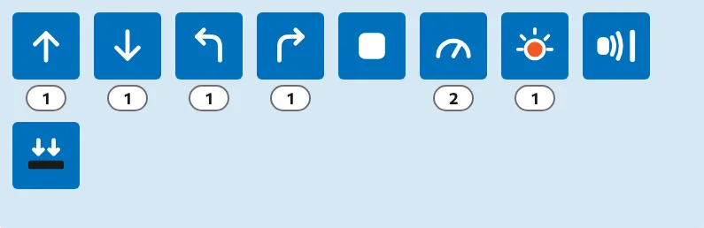
| ΜπλοκBlock | Τι κάνειWhat it does |
|---|---|
| Μπροστά / πίσωForward / back | 1–5 τετράγωνα, ή κενό οβάλ = συνέχεια μέχρι το επόμενο μπλοκ κίνησης ή το στοπ.1–5 squares, or the empty oval = keep going until the next move block or stop. |
| Αριστερά / δεξιάLeft / right | Στροφή επί τόπου, 1–4 τέταρτα (90°). Κενό οβάλ = γυρίζει συνέχεια.Turn on the spot, 1–4 quarter turns (90°). Empty oval = keeps turning. |
| ΣτοπStop | Σταματά τους τροχούς.Stops the wheels. |
| ΤαχύτηταSpeed | Μόνο στο TPBot Edu: 1 αργά (20 cm/s), 2 μέτρια (30), 3 γρήγορα (45).TPBot Edu only: 1 slow (20 cm/s), 2 medium (30), 3 fast (45). |
| ΦώταLights | Τα δύο φώτα μπροστά: 1 κόκκινο, 2 πράσινο, 3 μπλε, 4 κίτρινο, 5 άσπρο, 6 ροζ, κενό = σβηστά.The two front lights: 1 red, 2 green, 3 blue, 4 yellow, 5 white, 6 pink, empty = off. |
| Περίμενε εμπόδιοWait for an obstacle | Περιμένει μέχρι ο αισθητήρας απόστασης να δει κάτι πιο κοντά από 10 cm.Waits until the distance sensor sees something closer than 10 cm. |
| Περίμενε μαύρη γραμμήWait for a black line | Περιμένει μέχρι και οι δύο αισθητήρες δαπέδου να δουν μαύρο.Waits until both floor sensors see black. |
Έλεγχος (γκρι)Control (grey)
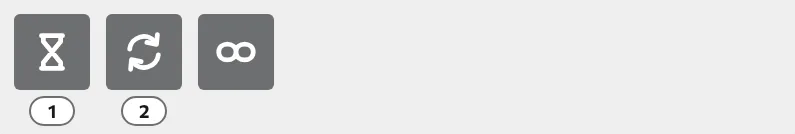
Περίμενε 1–3 δευτερόλεπτα, επανάλαβε 2–5 φορές, για πάντα.
Wait 1–3 seconds, repeat 2–5 times, forever.
Πρόσθετα (πράσινο)Add-ons (green)
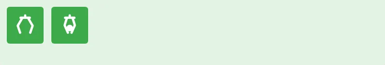
Άνοιξε την αρπάγη και κλείσε την αρπάγη. Δείτε το κεφάλαιο 14.
Open the grabber and close the grabber. See chapter 14.
7. Εκτέλεση και εργαλεία εκπαιδευτικού7. Running and teacher tools
Πατήστε το πράσινο κουμπί. Το μπλοκ που εκτελείται φωτίζεται, το εικονικό ρομπότ κινείται στη σκηνή και, αν είναι συνδεδεμένο, το πραγματικό ρομπότ κάνει το ίδιο. Το κόκκινο κουμπί σταματά τα πάντα.
Press the green button. The running block lights up, the virtual robot moves on the stage and, if connected, the real robot does the same. The red button stops everything.
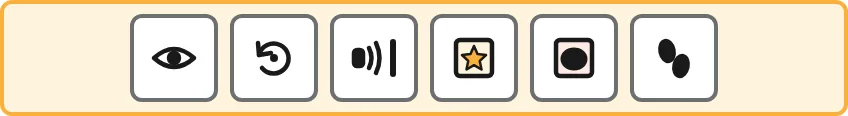
| ΕργαλείοTool | Τι κάνειWhat it does |
|---|---|
| ΠροεπισκόπησηPreview | Δείχνει με διακεκομμένη γραμμή πού θα πάει το ρομπότ, πριν πατηθεί το πράσινο κουμπί. Κλείστε το όταν θέλετε τα παιδιά να προβλέψουν μόνα τους.Shows with a dashed line where the robot will go, before the green button is pressed. Turn it off when you want the children to predict on their own. |
| Επιστροφή στην αρχήBack to start | Το εικονικό ρομπότ γυρίζει στο τετράγωνο εκκίνησης και καθαρίζουν τα ίχνη. Το πραγματικό ρομπότ το μεταφέρετε με το χέρι.The virtual robot goes back to the start square and the trail clears. Carry the real robot back by hand. |
| ΑισθητήρεςSensors | Χωρίς ρομπότ, προσομοιώνει «εμπόδιο μπροστά» και «μαύρη γραμμή», για να δοκιμάσετε τα μπλοκ αναμονής.Without a robot, it simulates "obstacle ahead" and "black line", to try the waiting blocks. |
| Στόχος και παγίδαTarget and trap | Ενεργοποιήστε το εργαλείο και πατήστε τετράγωνα για να βάλετε (ή να βγάλετε) αστέρια και παγίδες. Όταν το ρομπότ φτάνει σε αστέρι, το micro:bit χαμογελά και ακούγεται χαρούμενος ήχος. Σε παγίδα, το ρομπότ «πέφτει» και ακούγεται λυπημένος ήχος.Turn the tool on and tap squares to place (or remove) stars and traps. When the robot reaches a star, the micro:bit smiles and a happy sound plays. On a trap the robot "falls" and a sad sound plays. |
| Μετρητής βημάτωνStep counter | Μετρά τα τετράγωνα που διάνυσε το ρομπότ. Χρήσιμο για «φτάσε με τα λιγότερα βήματα».Counts the squares the robot has driven. Useful for "get there in the fewest steps". |
Τετράγωνο εκκίνησης και κατεύθυνση: πατήστε ένα τετράγωνο της σκηνής για να ξεκινά από εκεί το ρομπότ. Πατήστε το ίδιο το ρομπότ για να το στρίψετε κατά ένα τέταρτο.
Start square and direction: tap a square on the stage for the robot to start there. Tap the robot itself to turn it a quarter turn.
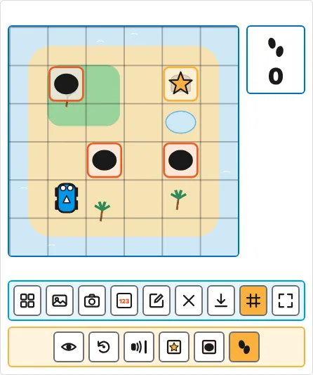
8. Καταγραφή βημάτων8. Record mode
Ο πιο απλός τρόπος για τα μικρότερα παιδιά, όπως στα επιδαπέδια ρομπότ: πατούν βελάκια, το ρομπότ τα θυμάται, και με το «Πάμε!» τα εκτελεί ένα ένα. Ανοίγει από το μεγάλο κουμπί με την κόκκινη τελεία, αριστερά από το πράσινο κουμπί.
The simplest way for the youngest children, like floor robots: they press arrows, the robot remembers them, and "Go!" runs them one by one. It opens from the large button with the red dot, left of the green button.
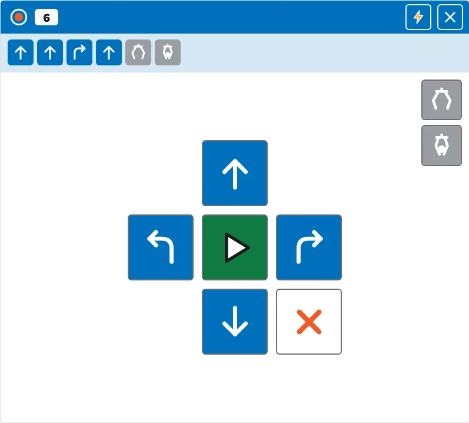
- Βελάκια: μπροστά ένα τετράγωνο, πίσω ένα τετράγωνο, στροφή αριστερά ή δεξιά. Κάθε πάτημα ακούγεται και μπαίνει στη λωρίδα της μνήμης (έως 40 βήματα).
- Arrows: forward one square, back one square, turn left or right. Each press beeps and joins the memory strip (up to 40 steps).
- Πάμε! (πράσινο): εκτελεί τα βήματα με μισό δευτερόλεπτο παύση ανάμεσα. Το ρομπότ συνεχίζει από εκεί που βρίσκεται. Μετά από αστέρι ή παγίδα, ξεκινά ξανά από την αρχή.
- Go! (green): runs the steps with half a second between them. The robot carries on from where it is. After a star or a trap, it starts again from the start square.
- X: σβήνει τη μνήμη.
- X: erases the memory.
- Αρπάγη (γκρι, πάνω δεξιά): ανοίγει και κλείνει την αρπάγη, ως βήματα της μνήμης.
- Grabber (grey, top right): opens and closes the grabber, as memory steps.
- Κεραυνός (άμεση κίνηση): κάθε πάτημα κινεί αμέσως το ρομπότ, σαν τηλεχειριστήριο. Τα βήματα γράφονται και στη μνήμη, ώστε το «Πάμε!» να τα επαναλάβει.
- Lightning (move at once): every press moves the robot straight away, like a remote control. The steps are still written to the memory, so "Go!" can repeat them.
Ξεκινήστε με την άμεση κίνηση (τα παιδιά βλέπουν αιτία και αποτέλεσμα), περάστε στη μνήμη με το «Πάμε!» (σχεδιάζουν πριν δράσουν), και μετά στα μπλοκ του προγράμματος.
Start with "move at once" (children see cause and effect), move on to memory with "Go!" (they plan before acting), and then to the program blocks.
9. Πίστες9. Tracks
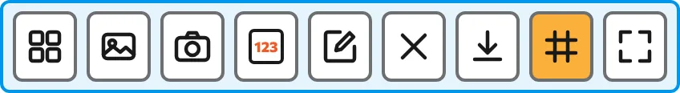
Βιβλιοθήκη πιστώνTracks library
Οι επίσημες πίστες του RoboTrails ανοίγουν με ένα πάτημα, μαζί με το τετράγωνο εκκίνησης, τα αστέρια και τις παγίδες τους. Πολλές υπάρχουν στα ελληνικά και στα αγγλικά. Το κουμπί λήψης πάνω δεξιά κατεβάζει την πίστα που έχετε στη σκηνή ως εικόνα.
The official RoboTrails tracks open with one tap, together with their start square, stars and traps. Many exist in Greek and in English. The download button at the top right saves the track on your stage as a picture.
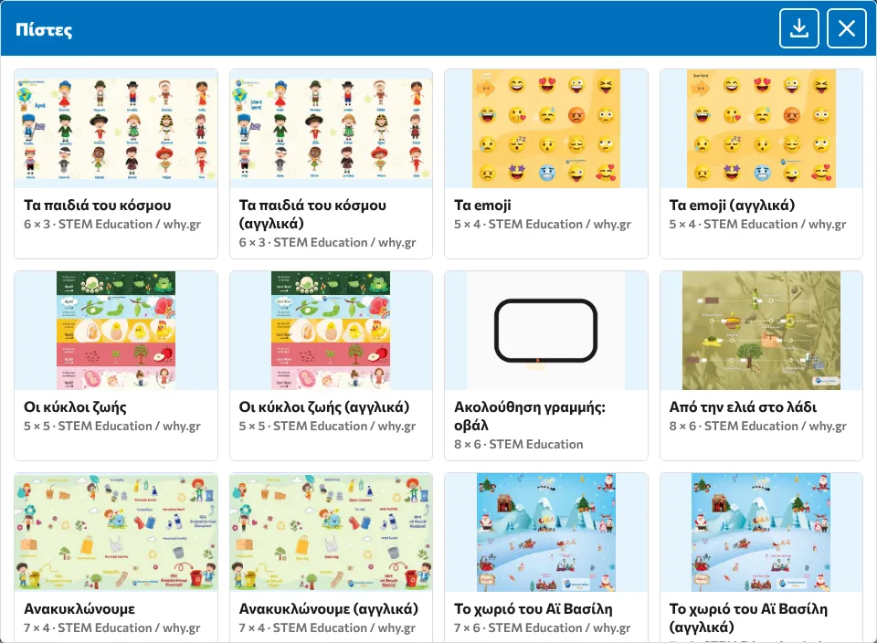
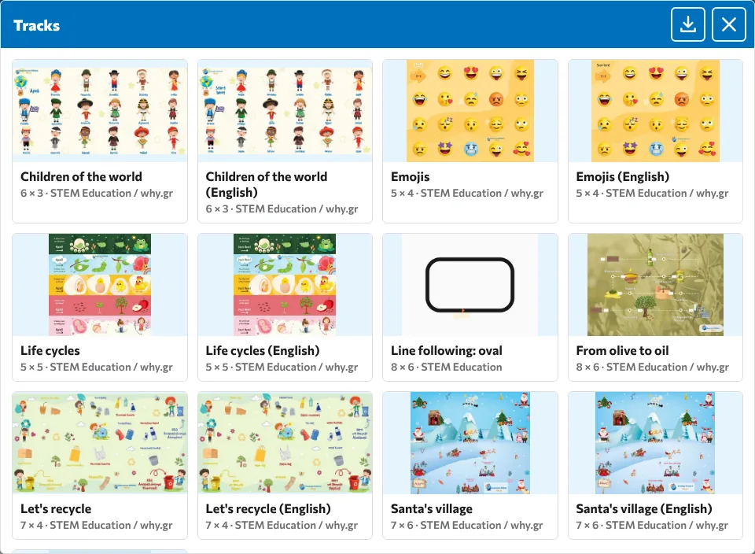
Δική σας πίσταYour own track
- Φόντο από εικόνα: διαλέξτε μια εικόνα. Αν οι διαστάσεις της είναι πολλαπλάσια των 200 pixel (π.χ. 1200 × 1000), το πλέγμα προσαρμόζεται μόνο του (6 × 5). Αλλιώς η εικόνα απλώνεται στο τρέχον πλέγμα.
- Backdrop from a picture: choose a picture. If its size is a multiple of 200 pixels (e.g. 1200 × 1000), the grid adjusts by itself (6 × 5). Otherwise the picture is stretched over the current grid.
- Φωτογραφία πίστας: η κάμερα ανοίγει με τις γραμμές του πλέγματος από πάνω. Κρατήστε το tablet πάνω από την πίστα, ταιριάξτε τα τετράγωνα και τραβήξτε.
- Photo of the track: the camera opens with the grid lines on top. Hold the tablet above the floor track, line up the squares and take the photo.
- Πρότυπο: κατεβάζει ένα άδειο πλέγμα στο τρέχον μέγεθος, για εκτύπωση ή ζωγραφική.
- Template: downloads an empty grid at the current size, for printing or painting.
- Αλλαγή τετραγώνου: ζωγραφίστε ή φωτογραφίστε ένα ένα τα τετράγωνα (κεφάλαιο 10). Δουλεύει και στις επίσημες πίστες.
- Modify square: draw or photograph the squares one by one (chapter 10). It also works on the official tracks.
- Μέγεθος πλέγματος: 3 έως 8 στήλες και γραμμές, από τις ρυθμίσεις (όταν δεν υπάρχει φόντο).
- Grid size: 3 to 8 columns and rows, in the settings (when there is no backdrop).
Αποθήκευση και μεταφοράSaving and moving tracks
Το κουμπί λήψης της βιβλιοθήκης φτιάχνει ένα αρχείο PNG της πίστας, με τις γραμμές του πλέγματος αν είναι ανοιχτό. Μέσα στο αρχείο κρύβονται και το τετράγωνο εκκίνησης, τα αστέρια, οι παγίδες και τα διαδραστικά τετράγωνα. Ανοίξτε το σε άλλο tablet με το κουμπί «φόντο από εικόνα» και όλα επανέρχονται.
The library's download button makes a PNG of the track, with the grid lines if the grid is on. Hidden inside the file are also the start square, the stars, the traps and the interactive squares. Open it on another tablet with the "backdrop from a picture" button and everything comes back.
10. Αλλαγή τετραγώνου10. Modifying a square
Ενεργοποιήστε το εργαλείο με το μολύβι στο τετράγωνο και πατήστε ένα τετράγωνο της σκηνής. Το εργαλείο μένει ενεργό, ώστε να πατάτε το ένα τετράγωνο μετά το άλλο.
Turn on the tool with the pencil on a square and tap a square on the stage. The tool stays on, so you can tap one square after another.
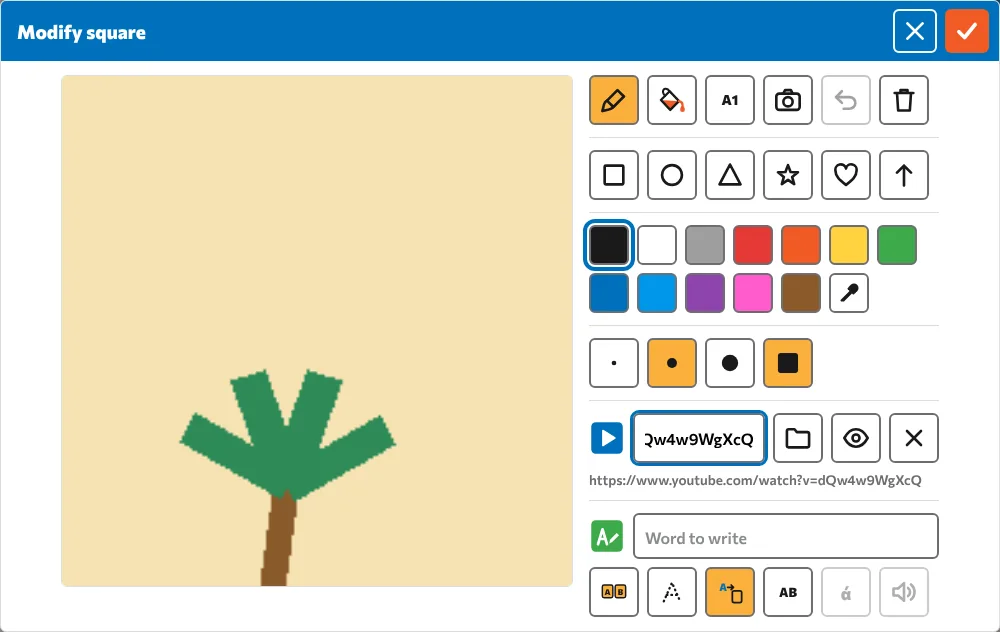
| ΕργαλείοTool | ΧρήσηUse |
|---|---|
| ΠινέλοBrush | Ελεύθερη ζωγραφική, σε τρία πάχη.Free drawing, in three thicknesses. |
| ΚουβάςBucket | Γεμίζει με χρώμα μια περιοχή με παρόμοιο χρώμα.Fills an area of similar colour. |
| ΣταγονόμετροEyedropper | Πατήστε το και μετά το τετράγωνο: το χρώμα εκεί γίνεται το τρέχον χρώμα. Αν είναι νέο, εμφανίζεται ως 13ο χρώμα.Tap it, then the square: the colour there becomes the current colour. If it is new, it appears as a 13th swatch. |
| ΣχήματαShapes | Τετράγωνο, κύκλος, τρίγωνο, αστέρι, καρδιά, βέλος. Σύρετε για να ορίσετε το μέγεθος ή πατήστε για κανονικό μέγεθος. Το βέλος δείχνει προς τα εκεί που σύρατε. Το κουμπί με το τετράγωνο αλλάζει γεμάτο ή περίγραμμα.Square, circle, triangle, star, heart, arrow. Drag to set the size or tap for a standard size. The arrow points the way you dragged. The square button switches filled or outline. |
| Γράμματα και αριθμοίLetters and numbers | Γράψτε έως 6 χαρακτήρες και πατήστε μέσα στο τετράγωνο.Type up to 6 characters and tap in the square. |
| ΚάμεραCamera | Τετράγωνη φωτογραφία που γίνεται το τετράγωνο (μπορείτε μετά να ζωγραφίσετε πάνω της). Υπάρχει και επιλογή εικόνας από τη συσκευή.A square photo that becomes the square (you can then draw on it). You can also pick a picture from the device. |
| Αναίρεση, καθάρισμαUndo, clear | Πίσω ένα βήμα, ή λευκό τετράγωνο.One step back, or a white square. |
Στο κάτω μέρος του παραθύρου βάζετε και ένα βίντεο ή μια εικόνα, ή μια λέξη για γράψιμο. Αυτά είναι τα διαδραστικά τετράγωνα του επόμενου κεφαλαίου. Το OK κρατά τις αλλαγές, το X τις ακυρώνει.
At the bottom of the window you can also add a video or picture, or a word to write. These are the interactive squares of the next chapter. OK keeps the changes, X cancels them.
11. Διαδραστικά τετράγωνα11. Interactive squares
Ένα διαδραστικό τετράγωνο ανοίγει κάτι όταν το ρομπότ πάει εκεί: ένα βίντεο, μια εικόνα ή μια ιστοσελίδα, έναν πίνακα γραφής λέξεων ή έναν πίνακα αριθμών. Φαίνεται με ένα μικρό μπλε σήμα «play» στην πάνω αριστερή γωνία και μπορεί να έχει ταυτόχρονα αστέρι ή παγίδα.
An interactive square opens something when the robot gets there: a video, a picture or a web page, a spelling board or a numbers board. It shows a small blue "play" sign in the top left corner and can have a star or a trap at the same time.
Πότε ανοίγειWhen it opens
- Αν το διαδραστικό τετράγωνο είναι στη διαδρομή, το ρομπότ σταματά στο προηγούμενο τετράγωνο και ανοίγει η ερώτηση. Μόλις απαντηθεί (ή κλείσει), το ρομπότ μπαίνει στο τετράγωνο και συνεχίζει την κίνησή του.
- If the interactive square is on the route, the robot stops on the square before it and the question opens. Once it is answered (or closed), the robot drives in and carries on with its move.
- Όσο είναι ανοιχτό, το πρόγραμμα περιμένει. Το κόκκινο κουμπί στοπ το κλείνει. Με πληκτρολόγιο, το Esc το κλείνει επίσης.
- While it is open, the program waits. The red stop button closes it. With a keyboard, Esc closes it too.
- Κάθε τετράγωνο έχει ένα μόνο διαδραστικό στοιχείο: αν βάλετε νέο, αντικαθιστά το παλιό.
- Each square holds one interactive item: a new one replaces the old one.
Βίντεο, εικόνα ή σύνδεσμοςVideo, picture or link
Στο «Αλλαγή τετραγώνου», επικολλήστε έναν σύνδεσμο ή διαλέξτε ένα αρχείο από τη συσκευή (εικόνα, κινούμενο GIF ή βίντεο). Το μάτι κάνει δοκιμή, το X το αφαιρεί.
In "Modify square", paste a link or choose a file from the device (a picture, an animated GIF or a video). The eye tries it, the X removes it.
- Σύνδεσμοι YouTube, Vimeo και Google Drive παίζουν μέσα στην εφαρμογή. Άμεσοι σύνδεσμοι σε εικόνα ή βίντεο (.jpg, .gif, .mp4…) επίσης.
- YouTube, Vimeo and Google Drive links play inside the app. Direct links to a picture or video (.jpg, .gif, .mp4…) too.
- Άλλες ιστοσελίδες ανοίγουν σε πλαίσιο. Αν μια σελίδα δεν επιτρέπει να εμφανιστεί μέσα σε άλλη, πατήστε το κουμπί «άνοιγμα σε νέα καρτέλα».
- Other web pages open in a frame. If a page refuses to show inside another one, press the "open in a new tab" button.
- Ένα αρχείο από τη συσκευή μένει μόνο σε αυτή τη συσκευή. Για άλλα tablet, χρησιμοποιήστε σύνδεσμο ή κατεβάστε την πίστα: αρχεία έως 10 MB ταξιδεύουν μέσα στην εικόνα της πίστας.
- A file from the device stays on that device only. For other tablets, use a link or download the track: files up to 10 MB travel inside the track picture.
12. Πίνακας γραφής λέξεων12. The spelling board
Το ρομπότ φτάνει, για παράδειγμα, στο τετράγωνο με την μπανάνα, και το παιδί πρέπει να γράψει «μπανάνα». Τα γράμματα ελέγχονται ένα ένα, καθώς τα γράφει με το δάχτυλο.
The robot reaches, say, the square with the banana, and the child has to write "banana". The letters are checked one by one as the child writes them with a finger.
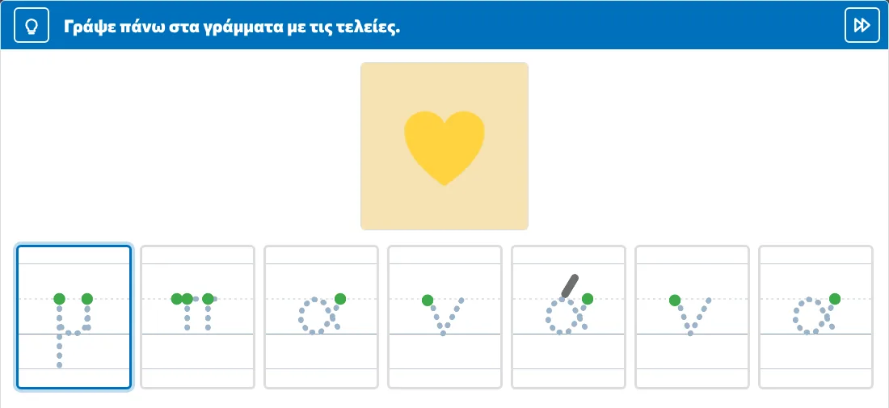
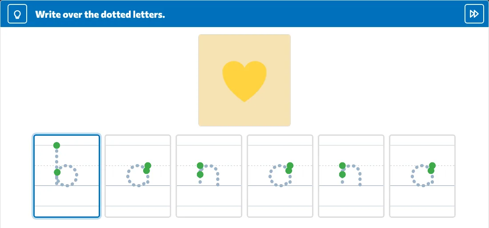
ΡύθμισηSetting it up
- Ζωγραφίστε ή φωτογραφίστε το τετράγωνο: αυτή είναι η εικόνα του πίνακα.Draw or photograph the square: this becomes the board's picture.
- Στην πράσινη γραμμή, γράψτε τη λέξη κανονικά, με τόνους (π.χ. «μπανάνα»). Τα σημεία στίξης (! . , ;) εμφανίζονται ήδη συμπληρωμένα.In the green row, type the word normally (e.g. "banana"). Punctuation (! . , ;) is shown already filled in.
- Διαλέξτε ΑΒ (κεφαλαία) ή αβ (πεζά). Με πεζά, το ά ζητά από το παιδί να γράψει και τους τόνους. Αλλιώς οι τόνοι είναι ήδη γραμμένοι.Choose AB (capitals) or ab (lowercase). In lowercase, ά asks the child to write the accents too. Otherwise the accents are already written.
- Διαλέξτε επίπεδο (πίνακας παρακάτω) και πατήστε OK.Choose a level (table below) and press OK.
| ΕπίπεδοLevel | Τι βλέπει το παιδίWhat the child sees |
|---|---|
| ΠλακίδιαTiles | Πατά τα γράμματα με τη σωστή σειρά, χωρίς γράψιμο. Υπάρχουν και 3 λάθος πλακίδια.Taps the letters in order, without writing. There are 3 wrong tiles too. |
| ΞεσήκωμαTrace | Γράφει πάνω στα γράμματα με τις τελείες.Writes over the dotted letters. |
| ΑντιγραφήCopy | Βλέπει τη λέξη από πάνω και τη γράφει.Sees the word above and writes it. |
| Από μνήμηςFrom memory | Βλέπει μόνο την εικόνα και ακούει τη λέξη. Διαθέσιμο μόνο με πεζά και τόνους, ώστε η φωνή του tablet να τη διαβάζει σωστά.Sees only the picture and hears the word. Available only with lowercase and accents, so the tablet's voice reads it correctly. |
Πώς ελέγχεταιHow it is checked
- Το παιδί γράφει στο κουτί με το μπλε περίγραμμα. Όταν σταματήσει για ένα δευτερόλεπτο, το γράμμα ελέγχεται: πράσινο αν είναι σωστό, κόκκινο και κούνημα αν όχι.
- The child writes in the box with the blue outline. After a one-second pause the letter is checked: green if right, red and a shake if not.
- Η λάμπα δείχνει πώς γράφεται το γράμμα. Μετά από 3 λάθη εμφανίζεται μόνη της, μαζί με το κουμπί παράλειψης.
- The light bulb shows how the letter is written. After 3 wrong tries it appears by itself, together with the skip button.
- Με πεζά ελέγχεται και το ύψος: το ο δεν είναι Ο και το ι δεν είναι l.
- In lowercase the height is checked too: o is not O and i is not l.
- Ο έλεγχος είναι επιεικής για μικρά παιδιά, αλλά δεν είναι τέλειος. Παρόμοια γράμματα (Ν/Μ, ν/υ, ο/σ) μπορεί σπάνια να μπερδευτούν.
- The checking is lenient for young children, but not perfect. Similar letters (N/M, v/u, o/s) can occasionally be confused.
Η λέξη διαβάζεται με τη φωνή του tablet. Αν δεν ακούγεται τίποτα στα ελληνικά, εγκαταστήστε τα ελληνικά στις ρυθμίσεις «Μετατροπή κειμένου σε ομιλία» της συσκευής.
The word is read by the tablet's voice. If nothing is heard in Greek, install Greek in the device's "text-to-speech" settings.
13. Τετράγωνα αριθμών13. Numbers squares
Ενεργοποιήστε το κουμπί 123 στα εργαλεία πίστας και πατήστε ένα τετράγωνο. Ανοίγει το παράθυρο «Τετράγωνο αριθμών». Κάθε φορά που το ρομπότ φτάνει εκεί, εμφανίζεται μια νέα άσκηση με σύντομη οδηγία στην κορυφή.
Turn on the 123 button in the track tools and tap a square. The "Numbers square" window opens. Each time the robot gets there, a new exercise appears, with a short instruction at the top.
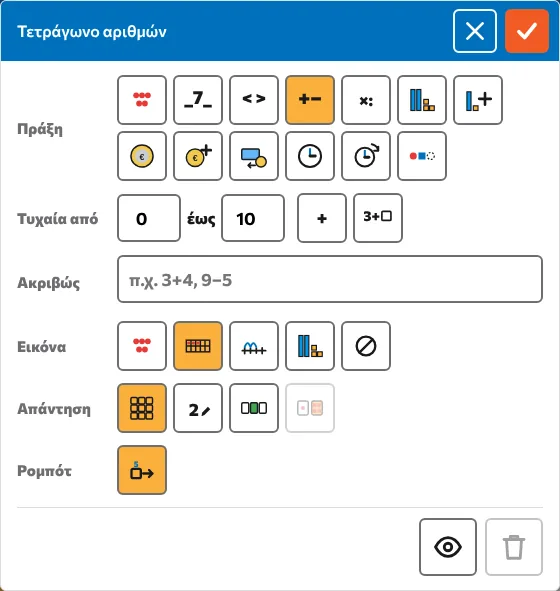
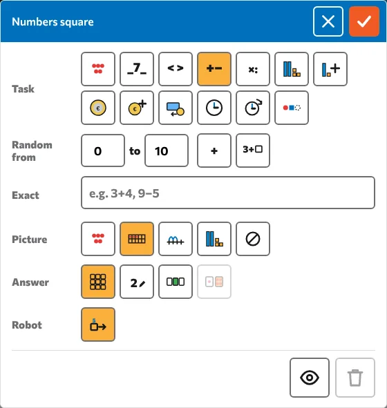
ΠράξειςTasks
| ΠράξηTask | Τι κάνει το παιδίWhat the child does |
|---|---|
| ΜέτρησηCount | Μετρά τελείες, πλαίσιο δεκάδας ή κύβους και γράφει τον αριθμό.Counts dots, a ten-frame or blocks and writes the number. |
| Πριν / μετά / ανάμεσαBefore / after / between | _ 7 · 7 _ · 6 _ 8 |
| ΣύγκρισηCompare | Διαλέγει <, = ή >, ή πατά την ομάδα με τα περισσότερα.Picks <, = or >, or taps the group with more. |
| Πρόσθεση / αφαίρεσηAdd / take away | Με το κουμπί + διαλέγετε +, − ή και τα δύο. Με το «αριθμός που λείπει» το κενό μπορεί να είναι οπουδήποτε: 3 + ▢ = 7.The + button picks +, − or both. With "missing number" the blank can be anywhere: 3 + ▢ = 7. |
| × και :× and : | Πολλαπλασιασμός ως ομάδες ή πίνακας, διαίρεση ως μοιρασιά σε πιάτα. Μεγάλα γινόμενα εμφανίζονται σε αριθμογραμμή με ίσα άλματα.Multiplication as groups or an array, division as sharing onto plates. Large products show as equal hops on a number line. |
| Δεκάδες και μονάδεςTens and ones | Διαβάζει κύβους και ράβδους και γράφει τον αριθμό.Reads cubes and rods and writes the number. |
| Φτιάξε τον αριθμόBuild the number | Φτιάχνει τον αριθμό με εκατοντάδες, δεκάδες και μονάδες (− / +) και πατά ✓.Builds the number with hundreds, tens and ones (− / +) and presses ✓. |
| ΧρήματαMoney | Μετρά κέρματα και χαρτονομίσματα (ολόκληρα ευρώ).Counts coins and notes (whole euros). |
| ΠληρωμήPay | Βάζει στο τραπέζι τα σωστά χρήματα. Κάθε συνδυασμός που κάνει το ποσό είναι σωστός.Puts the right money on the table. Any combination that makes the amount is right. |
| ΡέσταChange | Χαρτονόμισμα και τιμή: 10 − 6 = ▢ €.A note and a price: 10 − 6 = ▢ €. |
| ΡολόιRead the clock | Διαβάζει την ώρα: ακριβώς, και μισή, και τέταρτο ή ανά 5 λεπτά.Reads the time: o'clock, half hours, quarters or 5 minutes. |
| Βάλε την ώραSet the clock | Γυρίζει τους δείκτες με − / + και πατά ✓.Turns the hands with − / + and presses ✓. |
| ΜοτίβαPatterns | Σχήματα (ΑΒ, ΑΑΒ, ΑΒΒ, ΑΒΓ) ή αριθμοί ανά +1… +10 ή −1… −10. Συμπληρώνει ό,τι λείπει.Shapes (AB, AAB, ABB, ABC) or numbers in steps of +1… +10 or −1… −10. Fills in what is missing. |
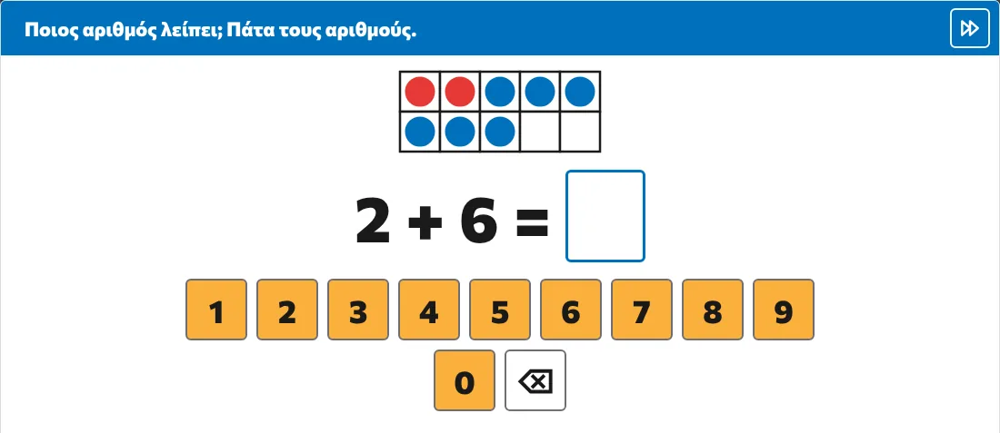
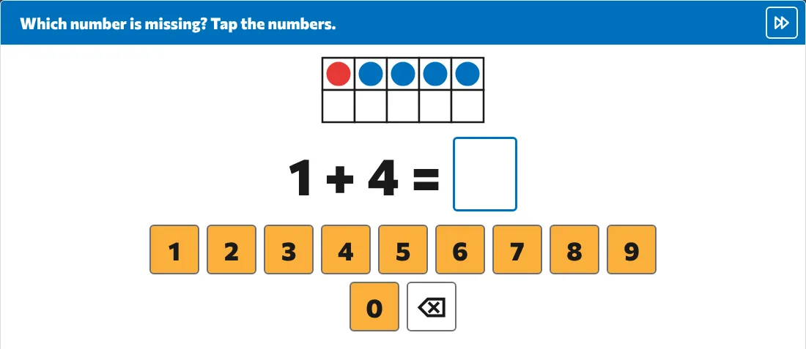
Οι επιλογές του παραθύρουThe window's options
- Τυχαία από … έως: οι αριθμοί επιλέγονται τυχαία μέσα σε αυτό το εύρος. Στο ρολόι, το εύρος είναι οι ώρες.
- Random from … to: the numbers are picked at random within this range. For the clock, the range is the hours.
- Ακριβώς: γράψτε συγκεκριμένες ασκήσεις, χωρισμένες με κόμμα. Κάθε φορά επιλέγεται μία (ποτέ η ίδια δύο φορές στη σειρά). Παραδείγματα:
3+4, 9−5·3×4, 12:3·7 9, 15 12για σύγκριση ·3:30, 7:15για ρολόι ·7, 12, 15για τα υπόλοιπα. - Exact: type specific exercises, separated by commas. One is picked each time (never the same twice in a row). Examples:
3+4, 9−5·3×4, 12:3·7 9, 15 12to compare ·3:30, 7:15for the clock ·7, 12, 15for the rest. - Εικόνα: τελείες, πλαίσιο δεκάδας, αριθμογραμμή, κύβοι ή χωρίς εικόνα.
- Picture: dots, ten-frame, number line, blocks or no picture.
- Απάντηση: πλακίδια αριθμών, γράψιμο των ψηφίων με το δάχτυλο (ένα κουτί για κάθε ψηφίο, με Δ και Μ από πάνω), ή επιλογή από τρία.
- Answer: number tiles, writing the digits with a finger (one box per digit, labelled T and O), or a choice of three.
- Ρομπότ: «η απάντηση κινεί το ρομπότ». Με σωστή απάντηση, το ρομπότ μπαίνει στο τετράγωνο και προχωρά τόσα τετράγωνα όσα λέει η απάντηση (έως 20). Ιδανικό σε πίστα-αριθμογραμμή.
- Robot: "the answer moves the robot". With a right answer, the robot drives into the square and then moves as many squares as the answer (up to 20). Ideal on a number-line track.
Μετά από 3 λάθη εμφανίζεται κουμπί παράλειψης. Το μάτι στο κάτω μέρος του παραθύρου δοκιμάζει την άσκηση, ο κάδος αφαιρεί το τετράγωνο αριθμών.
After 3 wrong tries a skip button appears. The eye at the bottom of the window tries the exercise, the bin removes the numbers square.
Προτάσεις ανά τάξηSuggestions by grade
| ΠράξηTask | ΝηπιαγωγείοKindergarten | Α΄ ΔημοτικούGrade 1 | Β΄ ΔημοτικούGrade 2 |
|---|---|---|---|
| ΜέτρησηCount | 1–5, μετά 1–10, τελείες1–5, then 1–10, dots | 1–20, πλαίσιο δεκάδας1–20, ten-frame | έως 100, κύβοιto 100, blocks |
| Πριν / μετάBefore / after | 1–10 | 1–100 | 1–1000 |
| ΣύγκρισηCompare | 1–10, «πάτα την ομάδα»1–10, "tap the group" | 1–100, σύμβολα1–100, signs | 1–1000 |
| Πρόσθεση / αφαίρεσηAdd / take away | έως 5, τελείεςto 5, dots | έως 10, μετά έως 20 με υπέρβαση δεκάδαςto 10, then to 20 crossing ten | έως 100, αριθμογραμμήto 100, number line |
| × και :× and : | – | διπλά και μισά (π.χ. 2×4, 8:2)doubles and halves (e.g. 2×4, 8:2) | προπαίδεια 1–5, μετά 1–10times tables 1–5, then 1–10 |
| Δεκάδες και μονάδεςTens and ones | – | 10–99 | 100–999 |
| ΧρήματαMoney | – | έως 10 €to 10 € | έως 50 €, ρέστα από 20 €to 50 €, change from 20 € |
| ΡολόιClock | – | ακριβώς, και μισήo'clock, half past | και τέταρτο, παρά τέταρτο, ανά 5 λεπτάquarters, 5 minutes |
| ΜοτίβαPatterns | σχήματα ΑΒ, ΑΑΒshapes AB, AAB | ΑΒΓ, αριθμοί +1, +2ABC, numbers +1, +2 | +5, +10, −2, −10+5, +10, −2, −10 |
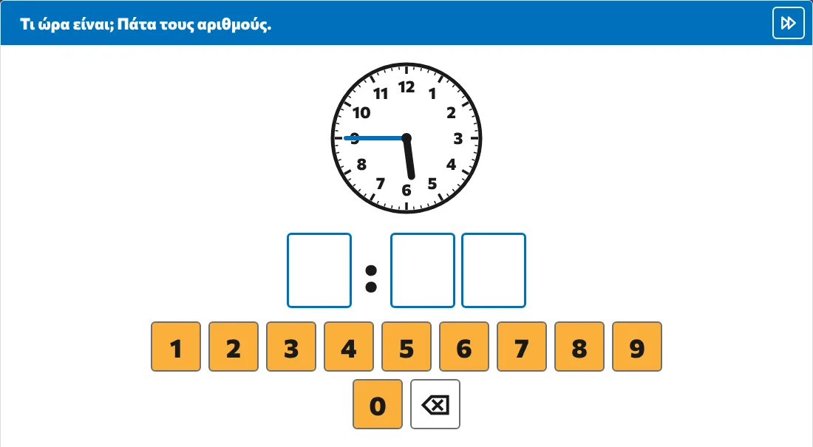
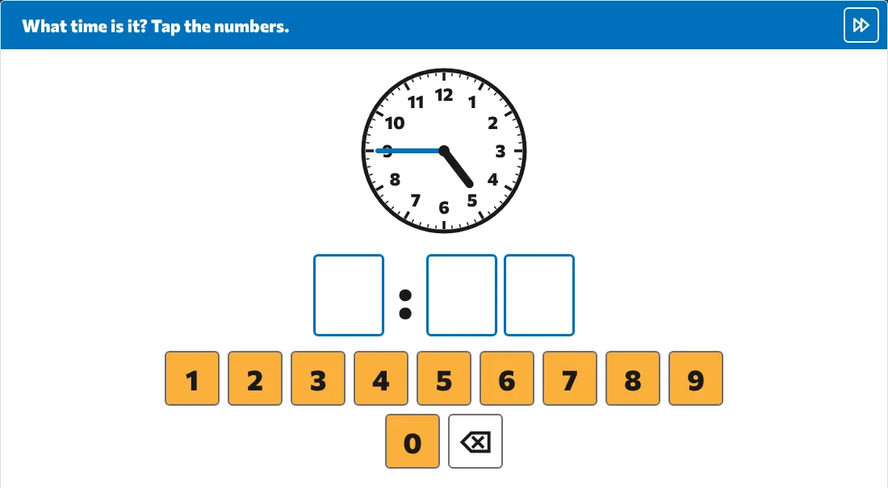
14. Πρόσθετα: η αρπάγη14. Add-ons: the grabber
Η αρπάγη ανοίγει και κλείνει με έναν σερβοκινητήρα 0–360°, συνδεδεμένο σε μία από τις υποδοχές S1–S4 του ρομπότ. Με αυτήν το ρομπότ μεταφέρει αντικείμενα από τετράγωνο σε τετράγωνο.
The grabber opens and closes with a 0–360° servo, plugged into one of the robot's S1–S4 sockets. With it, the robot carries objects from square to square.
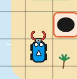
- Βεβαιωθείτε ότι το micro:bit έχει τον εκτελεστή με την εντολή
Z(κεφάλαιο 2).Make sure the micro:bit has the runner with theZcommand (chapter 2). - Στις ρυθμίσεις, διαλέξτε την υποδοχή του σερβοκινητήρα (S1–S4).In the settings, choose the servo's socket (S1–S4).
- Με το ρομπότ συνδεδεμένο, ρυθμίστε τη γωνία «ανοιχτή» και τη γωνία «κλειστή» με − και +. Η αρπάγη κινείται σε κάθε πάτημα, ώστε να βρείτε τις σωστές γωνίες με την αρπάγη μπροστά σας.With the robot connected, set the "open" angle and the "closed" angle with − and +. The grabber moves at each press, so you find the right angles with the grabber in front of you.
- Χρησιμοποιήστε τα μπλοκ της κατηγορίας «Πρόσθετα» ή τα γκρι κουμπιά της καταγραφής βημάτων.Use the blocks of the "Add-ons" category or the grey buttons of Record mode.
Μη βάζετε γωνία που σπρώχνει την αρπάγη πέρα από το τέρμα της: ο σερβοκινητήρας ζεσταίνεται και τα γρανάζια φθείρονται. Ρυθμίστε τις γωνίες μία φορά και σημειώστε τες.
Do not set an angle that pushes the grabber past its end stop: the servo heats up and the gears wear. Set the angles once and note them down.
15. Ρυθμίσεις15. Settings
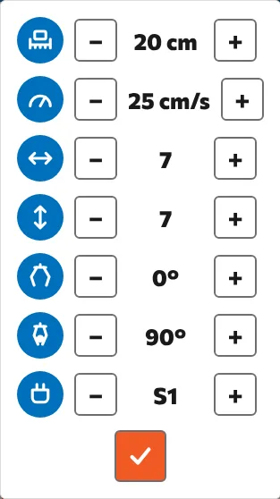
Πατήστε παρατεταμένα το − ή το + για γρήγορη αλλαγή. Οι ρυθμίσεις αποθηκεύονται στη συσκευή.
Press and hold − or + to change quickly. The settings are saved on the device.
| ΡύθμισηSetting | ΡομπότRobot | Τι ορίζειWhat it sets |
|---|---|---|
| Μήκος τετραγώνουSquare length | TPBot Edu | 10–40 cm (20 cm όπως ο χάρτης του κιτ).10–40 cm (20 cm like the kit's map). |
| ΤαχύτηταSpeed | TPBot Edu | 20–50 cm/s. |
| Ισχύς κινητήρωνMotor power | TPBot | 30–100%. |
| Χρόνος για ένα τετράγωνοTime for one square | TPBot | Πόσο κινείται για ένα τετράγωνο. Μετρήστε στο πάτωμά σας και διορθώστε.How long it drives for one square. Measure on your floor and adjust. |
| Χρόνος για ένα τέταρτο στροφήςTime for a quarter turn | TPBot | Πόσο γυρίζει για 90°.How long it turns for 90°. |
| Στήλες, γραμμέςColumns, rows | όλαall | 3–8, όταν δεν υπάρχει φόντο.3–8, when there is no backdrop. |
| Αρπάγη: ανοιχτή, κλειστή, υποδοχήGrabber: open, closed, socket | όλαall | Γωνίες 0–360° και υποδοχή S1–S4.Angles 0–360° and socket S1–S4. |
Το TPBot κινείται για ορισμένο χρόνο, οπότε η απόσταση αλλάζει με τη μπαταρία και το δάπεδο. Ελέγχετε τη ρύθμιση στην αρχή κάθε μαθήματος: βάλτε το ρομπότ να κάνει ένα τετράγωνο και μια στροφή, και διορθώστε τους χρόνους.
The TPBot moves for a set time, so the distance changes with the battery and the floor. Check the setting at the start of each lesson: make the robot drive one square and one turn, and adjust the times.
16. Ιδέες για την τάξη16. Ideas for the classroom
- Πρώτα χωρίς οθόνη: ένα παιδί είναι το «ρομπότ» και οι άλλοι δίνουν εντολές με κάρτες-βελάκια στο πάτωμα.
- Unplugged first: one child is the "robot" and the others give commands with arrow cards on the floor.
- Πρόβλεψη: κλείστε την προεπισκόπηση, ζητήστε από τα παιδιά να δείξουν με το δάχτυλο πού θα σταματήσει το ρομπότ, και μετά πατήστε «Πάμε!».
- Predict: turn the preview off, ask the children to point to where the robot will stop, then press "Go!".
- Λιγότερα βήματα: με τον μετρητή βημάτων, ποια ομάδα φτάνει στο αστέρι με τα λιγότερα;
- Fewest steps: with the step counter, which group reaches the star in the fewest?
- Ιστορία στην πίστα: τα παιδιά ζωγραφίζουν τετράγωνα με τα στάδια μιας ιστορίας και βάζουν σε μερικά ένα βίντεο ή μια λέξη.
- A story on the track: children draw squares with the stages of a story and put a video or a word on some of them.
- Αγορά: πίστα με καταστήματα, τετράγωνα «πληρωμή» και «ρέστα», και η αρπάγη μεταφέρει τα «ψώνια».
- Market: a track with shops, "pay" and "change" squares, and the grabber carries the "shopping".
- Αριθμογραμμή στο πάτωμα: με «η απάντηση κινεί το ρομπότ», κάθε σωστή πρόσθεση πάει το ρομπότ στο αποτέλεσμα.
- Number line on the floor: with "the answer moves the robot", each right addition takes the robot to the result.
17. Προβλήματα και λύσεις17. Troubleshooting
| ΠρόβλημαProblem | Τι να κάνετεWhat to do |
|---|---|
| Το micro:bit δεν εμφανίζεται στη λίστα Bluetooth.The micro:bit is not in the Bluetooth list. | Χρησιμοποιήστε Chrome ή Edge (όχι iPad). Ανοίξτε το Bluetooth της συσκευής. Ελέγξτε ότι ο εκτελεστής φτιάχτηκε με το «No Pairing Required». Πατήστε το κουμπί επαναφοράς στο πίσω μέρος του micro:bit και ξαναδοκιμάστε.Use Chrome or Edge (not an iPad). Turn on the device's Bluetooth. Check that the runner was made with "No Pairing Required". Press the reset button on the back of the micro:bit and try again. |
| Το ρομπότ πάει πολύ μακριά ή πολύ κοντά.The robot goes too far or not far enough. | TPBot Edu: ελέγξτε το μήκος τετραγώνου. TPBot: διορθώστε τους χρόνους στις ρυθμίσεις.TPBot Edu: check the square length. TPBot: adjust the times in the settings. |
| Η αρπάγη δεν κινείται.The grabber does not move. | Ο εκτελεστής πρέπει να είναι η νέα έκδοση (κεφάλαιο 2). Ελέγξτε την υποδοχή S1–S4 στις ρυθμίσεις.The runner must be the new version (chapter 2). Check the S1–S4 socket in the settings. |
| Το βίντεο YouTube δείχνει «Error 153».The YouTube video shows "Error 153". | Συμβαίνει όταν η εφαρμογή ανοίγει από αρχείο στον υπολογιστή. Ανοίξτε την από το robotrails.github.io/app. Από αρχείο, το βίντεο ανοίγει σε νέα καρτέλα.It happens when the app is opened from a file on the computer. Open it from robotrails.github.io/app. From a file, the video opens in a new tab. |
| Δεν φορτώνει η βιβλιοθήκη πιστών.The tracks library does not load. | Χρειάζεται σύνδεση στο internet. Ελέγξτε τη σύνδεση και ξανανοίξτε τη βιβλιοθήκη.It needs an internet connection. Check the connection and open the library again. |
| Ένα βίντεο ή μια εικόνα λείπει σε άλλο tablet.A video or picture is missing on another tablet. | Τα αρχεία της συσκευής μένουν σε αυτήν. Χρησιμοποιήστε σύνδεσμο, ή κατεβάστε την πίστα και ανοίξτε την στο άλλο tablet.Device files stay on that device. Use a link, or download the track and open it on the other tablet. |
| Η λέξη δεν ακούγεται.The word is not spoken. | Η φωνή δουλεύει μόνο με πεζά και τόνους. Εγκαταστήστε την ελληνική φωνή στις ρυθμίσεις ομιλίας της συσκευής.The voice works only with lowercase and accents. Install the Greek voice in the device's speech settings. |
| Χάθηκε το πρόγραμμα ή η πίστα.The program or the track is gone. | Αποθηκεύονται στον browser. Αν καθαρίσετε τα δεδομένα του browser ή αλλάξετε συσκευή, χάνονται. Κατεβάζετε τις πίστες σας ως εικόνα για ασφάλεια.They are saved in the browser. Clearing the browser's data or changing device loses them. Download your tracks as pictures to keep them safe. |
Κάτι άλλο; Αναφέρετε ένα πρόβλημα.
Something else? Report a problem.
↑ Στην κορυφή↑ Back to top